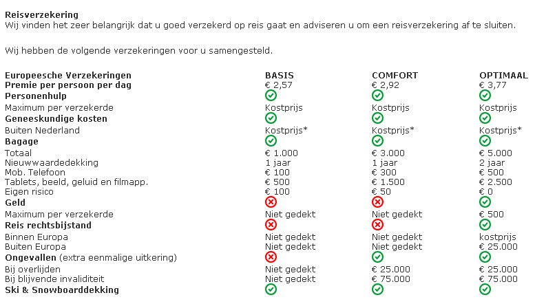

Les Trois Vallées Les Menuires
vrijdag 11 maart t/m zondag 20 maart 2016
Skigebied
Les Menuires (1800m)
http://www.lesmenuires.com/nl/
Les Trois Vallées (900 - 3562m)
http://www.sevabel.com/Les-Menuires-Saint-Martin
Het poedersneeuwparadijs Les Trois Vallées ligt in de Savoie, met 606 km geprepareerde pistes en 185 liften. In dit grootste aaneengesloten skigebied van de wereld zijn vele gebieden met onbeperkte offpiste mogelijkheden voor de liefhebbers.
Vele liften starten in Val Thorens, het hoogst gelegen skidorp (2300 m).
Piste tip: de zwarte pistes vanaf de Pointe de la Masse en vanaf Cime de Caron.
Les Menuires heeft in het grote gebied zijn eigen skigebied van 160 km piste met 36 liften waarvan er 13 direct vanuit Les Menuires vertrekken. Wachttijden zijn hier uitzonderlijk.
De beginners en minder gevorderden kunnen hier uitstekend uit de voeten, er zijn veel pistes met een lage moeilijkheidsgraad.
Het is mogelijk één dag in het gebied Les Trois Vallées te skiën, ter plaatse zelf te regelen (ca. € 20,- per dag).
Accomodatie
Hôtel Holiday Club Neige et Ciel***
Het hotelcomplex ligt op 1850 m, en minder dan 1 km van het centrum van Les Menuires.
Het uitgebreide aanbod van faciliteiten zorgt voor een aangenaam en onbezorgd verblijf.
Ligging en omgeving
Ligt prima aan de skipiste en minder dan 1 km. van centrum.
Verzorging
Basis halfpension, ontbijtbuffet, diner in buffetvorm met voor- en hoofdgerechten en salade/dessertbuffet (rode wijn/rosé is inbegrepen).
Faciliteiten
Receptie, liften, bar met zonnig terras, lounge met open haard, skilocker, bagageruimte, tv-room, internet.
Kamers
Voorzien van badkamer met douche en toilet, tv, telefoon.
Kamerindeling
Alleen-inschrijvende deelnemers(sters) krijgen ca. zes weken voor vertrek een lijst met namen toegestuurd van dames of heren die nog geen kamerpartner hebben. Zij kunnen uit die lijst een keuze maken.
Transfer
Royal Class touringcar
Opstapplaatsen:
Zwolle (alleen instap)
Opstapplaats Zwolle
Hanzelaan 101 8017JE Zwolle (P+R) achter Centraal Station. Voor de reis naar La Plagne wordt de vertrektijd op de busvoucher vermeld. Overgestapt wordt in 'De Lucht' aan A2 op busnr. ..(wordt nog bekend gemaakt) Op de terugreis kan niet in Zwolle worden uitgestapt, maar bijv. in Utrecht of iets dergelijks!
Opstapplaats Rotterdam
Metrostation Capelsebrug, Abram v.Rijckevorselplein 40, 3065 SM Rotterdam (P+R11 vrij parkeren).
De opstapplaats van touringcars is op de vrachtwagenparkeerplaats, rechts van het metrostation.
Personenauto's kunnen hier parkeren, doch onbewaakt.
Voor de reis naar La Plagne wordt de vertrektijd op de busvoucher vermeld.
Overgestapt wordt in 'De Lucht' aan A2 op busnr. ..(wordt nog bekend gemaakt)
Opstapplaats Amsterdam
Europaboulevard 24, bus stopt op parkeerterrein (P18) aan de overzijde van het Shell tankstation.
Voor de reis naar La Plagne wordt de vertrektijd op de busvoucher vermeld.
Overgestapt wordt in 'De Lucht' aan A2 op busnr. ..(wordt nog bekend gemaakt)
Opstapplaats Utrecht
Leidsche Rijn, Muziektheater Vredenburg, J.C.Verthorenpad 100 3541MV Utrecht (P+R)
Opstaplocatie bij P+R, (P1 betaald parkeren), ligt aan snelweg A2 afrit nr.7, volg borden P+R Muziektheater Vredenburg.
Mogelijkheid om gratis te parkeren: zet de auto in een woonwijk, bijv. Korianderstraat, vandaar 1 halte met stadsbus 28 naar Vleutenseweg. Opstaplocatie van de touringcars is praktisch beneden de weg bij het Muziektheater.
Voor de reis naar La Plagne wordt de vertrektijd op de busvoucher vermeld.
Overgestapt wordt in 'De Lucht' aan A2 op busnr. ..(wordt nog bekend gemaakt)
Bruchem(met pauze-stop en op-/overstap op parkeerplaats)
Pauzeer- en overstapplaats Bruchem
Op de parkeerplaats bij Restaurant 'De Lucht' (www.delucht.nl, A2 Rijksweg 2, 5314LJ Bruchem, ±7 km voor ring van 's Hertogenbosch) arriveren de bussen vanuit het hele land.
Indien nodig wordt hier overgestapt op de bus die naar de vakantiebestemming gaat.
De overstap kan worden gecombineerd met een eventueel gebruik van het diner in restaurant 'De Lucht'.
Voor de reis naar La Plagne wordt de vertrektijd op de busvoucher vermeld.
Personenauto's kunnen hier parkeren, doch onbewaakt.
Opstapplaats Eindhoven
P+R Meerhoven bevindt zich ter hoogte van A2 / Noord Brabantlaan (afrit 31 Veldhoven), ingang via Sliffertsestraat.
Voor de reis naar La Plagne wordt de vertrektijd op de busvoucher vermeld.
Dan via Maastricht of Heerlen naar Wagrain(Oostenrijk) en La Plagne (Frankrijk).
Opstapplaats Maastricht
MVV-stadion, 'De Geuselt' op parking Stadionplein 32 6225XM Maastricht
Voor de reis naar La Plagne wordt de vertrektijd op de busvoucher vermeld.
Opstapplaats Heerlen
Parking Tienbaan, t.h.v. Shell-station (snelweg A76 Heerlen, Aken). Niet actueel.
Let op:
- Door sneeuwval, gladheid en dergelijke kan het gebeuren dat de bus niet altijd de hotelingang kan bereiken.
- We worden dan zo dicht mogelijk bij het hotel afgezet of opgehaald.
- Van de deelnemers wordt verwacht dat ze zelf hun bagage van de bus naar het hotel brengen, en andersom.
Arrangement
| ❄ 2-persoonskamer | €799,- p.p. (2 personen op 2-persoonskamer) |
| ❄ 1-persoons kamer |
€939,- p.p. (€799,- + toeslag €140,-) (zeer beperkt beschikbaar) |
Inclusief:
- Luxe Royal Class nachtpendeldienst van Sunweb van Nederland naar Les Menuires v.v.
- De bus met de bijbehorende faciliteiten oa. video, toilet, bar met koffie, thee, fris en bier.
- 7 Overnachtingen op basis van halfpension. (diner op dag van aankomst, ontbijt op de dag van vertrek).
- Skipas “Les Menuires” voor 6 dagen (zondag t/m vrijdag).
- Toeristenbelasting
- Reserveringskosten
- Calamiteitenfonds
Skihuur
3 typen skimateriaal, bij boeking opgeven, prijzen per persoon
| classic | premium | expert | |
| 7 dg. carveski’s | € 55,- | € 79,- | € 95,- |
| 7 dg. carveski/-stok./-schoenen | € 69,- | € 95,- | € 115,- |
| 8 dg. carveski’s | € 65,- | € 89,- | € 109,- |
| 8 dg. carveski/-stok./-schoenen | € 79.- | € 105,- | € 129,- |
Prijzen van de huur van snowboard- en/of langlaufmateriaal zijn verkrijgbaar op aanvraag.
Skilessen worden niet collectief georganiseerd
Skipassen
incl. Senior prijzen
| Les Menuires/Saint Martin | |
| ❄ 6dg.skipas (in arrangement) | € 00,- |
| ❄ 6dg skipas senior 64tm74jr. | - € 6,- |
| ❄ 7dg skipas | € 33,- |
| ❄ 7dg skipas senior 64tm74jr. | - € 7,- |
| ❄ 8dg skipas | € 61,- |
| ❄ 8dg skipas senior 64tm74jr. | - € 8,- |
| Les Trois Vallées | |
| ❄ 6dg.skipas | € 54,- |
| ❄ 6dg.skipas senior 64tm74jr. | - € 11,- |
| ❄ 7dg. skipas | € 89,- |
| ❄ 7dg.skipas senior 64tm74jr | - € 13,- |
| ❄ 8dg.skipas | € 124,- |
| ❄ 8dg.skipas senior 64tm74jr | - € 15,- |
| ❄ Geen skipas en/of >75 jr. | - € 155,- |
Senioren vanaf 75 jr. krijgen gratis skipas, zelf af te halen bij de kassa van de liftmaatschappij met bijbetaling voor leges kosten cq administratiekosten.
Vervoer op-/uitstap toeslag per retourreis
| Zwolle (alleen instap) | € 7,50 | |
| Amsterdam | € 15,- (2x7,50) | |
| Rotterdam | € 10,- (2x5,-) | |
| Utrecht | € 10,- (2x5,-) | |
| Bruchem | € 00,- | |
| Eindhoven | € 00,- | |
| Maastricht | € 00,- |
Reductie
| Geen skipas | € 145,- |
| Eigen vervoer | € 90,- |
Extra kosten
| Annuleringsverzekering | 5.9% van gehele reissom |
| Poliskosten | € 1,20 |
| adm./tel. kosten | € 7,50 |
Bij boeking opgeven, prijzen per persoon

Reisverzekering
Zorg dat er altijd een reisverzekering is.
De reisverzekering kan via Sunweb worden afgesloten volgens onderstaande tabel
Wat zijn de reisverzekering voorwaarden van Basis, Comfort, Optimaal
Unieke dekking bij alle 3 de opties:
- Dekking voor hulpverlening en repatriëring als thuisblijvende ex-partner, familie 1ste, 2e of 3e graad iets ernstigs overkomt en u wilt naar huis terug.
- Dekking voor off-piste (indien niet verboden).
- Ski- en snowboarduitrusting gedekt onder de bagagedekking
- Kosten van skipassen, skilessen en gehuurde skiuitrusting, als u daar door een ongeval of voortijdige terugkeer geen gebruik meer van kunt maken. De verzekeringsmaatschappij vergoedt dan alleen de kosten van de niet-gebruikte dagen
Indien u een kortlopende reisverzekering heeft gesloten in of voor medio februari 2015, herkenbaar aan de naam ‘kortlopende reisverzekering’ en een premie van € 2,60 per persoon per dag, dan vindt u hier de algemene verzekeringsvoorwaarden (pdf).
Hier vindt u de algemene verzekeringsvoorwaarden voor deze kortlopende reisverzekering (pdf).